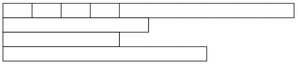

C - Les tableaux
L'objectif de ce chapitre est de savoir utiliser les structures de bases de la programmation avec le langage C#.
Info
Pour faciliter la compréhension du langage nous utiliserons le mode console.
a - Les tableaux simples
C# comme tout langage de programmation, permet de stocker des variables dans des tableaux. Un tableau est composé d’un nombre déterminé de variables de même type (primitif ou objet).
Nous avions vu précédemment qu'une variable peut être représenter comme étant une boîte dans laquelle on met quelque chose, un tableau est aussi une variable, mais une boîte dans laquelle on met plusieurs choses
int[] tableaudentier // tableaudentier est donc un tableau d’entier
string[] tableaudechaines // tableaudechaines est donc un tableau contenant des chaînes de caractèresLes crochets permettent de spécifier qu’il s’agit d’un tableau. Toutefois à ce niveau, les tableaux sont déclarés, mais non créés. En fait, ils n’existent pas concrètement en mémoire, vous venez de définir une entité virtuelle. Pour pouvoir les manipuler il faut donc les construire :
tableaudentier = new int[625];
tableaudechaines = new string[100];Remarque
La taille du tableau est définie au moment de sa création et ne peut plus être changée par la suite. Si on manque de place dans un tableau il faut donc obligatoirement en créer un nouveau plus grand.Une fois créé, le tableau est vide, les cellules sont initialisée à :
0pour les tableaux de valeurs numériques,falsepour les booléens,nullpour les tableaux d'objets.
L'accès aux cellules se fait en spécifiant un nombre entier (de type byte, char, short, ou int) indexé à partir de 0.
tableaudentiers[0]=24; // on place 24 dans la première cellule.
int i=8;
tableaudentiers[1]=i ; // Maintenant la deuxième cellule a reçu 8.
i=tableaudentier[0] ; // Maintenant i est à 24.
tableaudechaine[6]="coucou" ; // Là je pense que vous avez compris !?Les valeurs d'un tableau peuvent être créées au moment de son instanciation, ce qui définira aussi sa dimension.
int[] tableaudentier={1,2,3,7,6,4,9,4,8};
string[] tableaudechaines = { "Nicolas", "Jean", "Fabrice", "Michel", "Maxime" };Remarque importante
Les tableaux sont alloués dynamiquement. Leurs tailles peuvent donc être le résultat d'une expression.
personne[] famille;
famille = new personne[2+nombreenfants];Les tableaux sont traités en C# comme des types à part entière.
Il est donc très facile de travailler avec. Par exemple, la
méthode Length vous permettra de connaître la
taille de votre tableau.
monTableau.Length; //renvoi un entier indiquant la taille du tableaub - Tableaux multidimensionnel
Il existe deux types de tableaux multidimensionnels : les matrices qui sont des tableaux comportant le même nombre de colonnes que de lignes et les autres tableaux dont on peut déterminer précisément la taille pour chaque ligne et pour chaque colonne.
int[,] tableauEntiers = new int[4,4]; //Une matrice 2D d'entiers à 4x4 cases
char[,,,,] tableauCars = new char[20,20,20,20, 20]; //Une matrice 5D de 20x20x20x20x20 caractèresLe nombre de virgules entre les crochets indique si le tableau est bidimensionnel, tridimensionnel, quadridimensionnel, etc. A chaque virgule, une nouvelle dimension est créée.
Si vous aviez le droit avec une matrice ou un tableau unidimensionnel de préciser la taille de chacune de leurs dimensions en même temps que leur déclaration, c’est bien parce que ces tableaux-ci sont des cas particuliers. Pour un tableau multidimensionnel « classique », vous ne pouvez préciser la taille que de la 1ere dimension. Pour les autres dimensions, il faudra le faire plus loin dans le code.
int[][] tableauEntiers = new int[4][];
tableauEntiers[0] = new int[10];
tableauEntiers[1] = new int[5];
tableauEntiers[2] = new int[4];
tableauEntiers[3] = new int[7];Ce tableau peut donc se représenter comme ceci en fin de compte :
Interdiction
Par contre il est interdit de faire :int[][] tableauEntiers = new int[4][4];